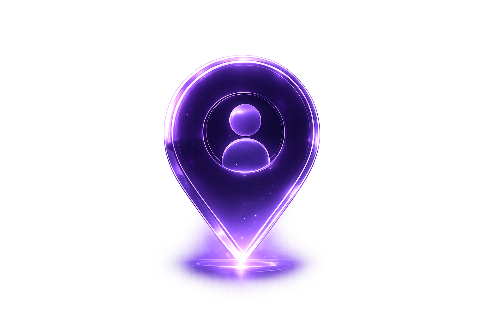

Live Alerts
Receive verified missing person alerts instantly based on your location.
- GPS Based
- Instant Notifications
- Verified Cases
Connecting families, volunteers and communities to reunite missing people through real-time collaboration.

Simple steps that bring us closer to hope.
Share details about the missing person with photos, location and important information.
Nearby volunteers instantly receive alerts and begin sharing verified information.
Volunteers coordinate safely, report sightings and help search together.
Every lead brings families one step closer to reunion. Together we restore hope.
Every search starts with one volunteer willing to help. Receive nearby alerts, coordinate safely with your community, and make a real impact when every second matters.
Verified Community Member
Every volunteer is equipped with intelligent tools that improve coordination, communication and safety during rescue operations.
Receive verified missing person alerts instantly based on your location.
Navigate assigned search areas with optimized and secure routes.
Send an emergency signal to nearby volunteers with one tap.
Securely share your live location with your assigned team.
Coordinate with nearby volunteers through shared missions and updates.
Built-in safety protocols ensure every search mission remains organized and secure.
When every second matters, ResQGrid helps families coordinate trusted volunteers, receive verified updates and search together with confidence.
No family should ever search alone.
Every report is reviewed before reaching the volunteer network.
Sensitive information stays protected while only essential search details are shared.
Track verified progress and volunteer activity throughout the search.
Reach nearby volunteers instead of relying only on personal contacts.
Nearby volunteers receive alerts quickly to begin organized search efforts.
Stay connected with volunteers and receive support every step of the way.
ResQGrid empowers communities to work together during missing person searches by connecting volunteers, technology and hope into one unified rescue network.

Build the world's fastest volunteer powered response network for missing person cases.
A future where every community can respond instantly when someone goes missing.
Every volunteer becomes a trusted part of one coordinated search network.
Intelligent alerts, live coordination and verified information save valuable time.
Join thousands of people working together to reunite families and bring hope back home.